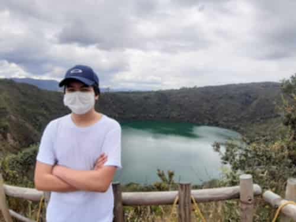

Hola lector o lectora! Hoy traigo un plan para que hagas con tu familia en un domingo. Es un plan mañanero pero no hay que madrugar mucho. Es ecológico, sano e incluso bioseguro. Empecemos.
Estamos hablando de la Laguna de Guatavita. Ubicada a 1 hora y media de Bogotá (en carro), un lugar sagrado para los indiguenas Muiscas, rodeado de leyendas y mucha naturaleza.
Empezemos por el precio. La entrada es de $13.000 para colombianos y $18.000 para extranjeros, adulto mayor no paga. Hay un parqueadero gratuito en la entrada, pero es realmente pequeño y se llena rápidamente así que: LLEGA TEMPRANO.
Con mi familia llegamos a las 8:00am, debimos esperar 15 minutos a que nos dieran un grupo, pero llegamos a buena hora. Como a las 11:00am cuando ya habíamos terminado el tour y nos disponíamos a ir a almorzar en algun lado, había un montón de gente haciendo fila para ingresar, llegaron realmente tarde y haciendo aglomeraciones, la idea es evitar espacios con mucha gente, así que repito, es importante LLEGAR TEMPRANO (A las 8:00am esta bien).
Abren de 8:30am a 4:00pm de martes a domingo y lunes festivos. Cuando llegamos, el clima estaba fresco, a pesar de estar en un páramo. Para cuando terminamos el paseo era casi medio dia y hacía calor. Sin embargo, recomiendo llevar agua, tu documento de identidad (Este es muy importante), chaqueta liviana y tenis cómodos (Aparte de tapabocas y gel desinfectante).
La caminata guiada en español dura unas 2 horas y media. Tiene varias subidas en escaleras, un adulto mayor puede hacerla, pero lento y tomándose su tiempo. Ibamos de últimos en la fila por la velocidad de mi abuelita de 73 años, pero aún así, lo logró y todos en la familia pudimos disfrutar.
Muchos piensan que la idea es ir, subir al mirador, tomarse la foto como la de la portada de este blog y bajar de nuevo. Pero hay mucho más por disfrutar aquí. Escuchar la historia y las leyendas que nos cuenta el guia e incluso aprender palabras musicas: Solo me acuerdo que "Gata" significaba "Fuego" para los muiscas, por eso nosotros decimos "Fogata". También dejarse rodear por esta naturaleza tan abundante e imponente, y al mismo tiempo hacer algo de ejercicio caminando y tomando aire puro.
El guía te abandona en el segundo mirador, una vez ahí vas a seguir un sendero de unos 300 metros a pie hasta llegar a un parador, donde prácticamente termina el lugar. Puedes comer y recuperar las calorias quemadas, o comprar un recuerdo. Para otra vez ir a la entrada de la laguna y volver a casa en carro tienes dos opciones: a pie (3 kilometros recorridos en 40 minutos aproximadamente) o en un servicio de bus que cobra $3.000. Mis abuelos se fueron en bus y el resto nos fuimos a pie, pero fue una mala decisión: Nos llenamos de polvo que los carros lanzaban con sus llantas en carretera destapada. Hubiese sido mejor ir en bus, para cuando tu visites el lugar deberías ir en ese bus que dura unos 5 minutos y no te llenas de polvo.
Despues de 40 minutos inhalando polvo llegamos de nuevo a la entrada la laguna. Ahí estaba el parqueadero donde dejamos el carro al inicio de la travesía. Nos subimos dispuestos a desembarcar en algún restaurante. Nosotros fuimos a "El carajillo", almorzamos, nos acostamos un rato en el pasto, sentimos el sol hasta que la lluvia nos hice pararnos y regresar a nuestra casa.
Fue un muy buen plan de fin de semana, la pasamos muy bien y por eso te lo recomiendo querido lector o lectora.
¿Entonces?, me siento muy feliz de que te hayas leído mi blogpost: ¡Házmelo saber!, me encanta que me manden tweets, a santigo171 así que ya tu sabe, ¿Qué te gustó?, ¿Qué no te gustó?, ¿Cómo podría mejorar?, espero tu tweet.
Mas entradas de blog dando click aquí